Working with uDALES facet data in MATLAB¶
In this tutorial we cover how to work with uDALES facet data. This pertains to all surface quanties, e.g. shear stress, surface pressure, surface energy balance terms and the temperature inside each of the facets.
The udbase post-processing class reads in most important input parameters, and contains a number of methods to work with facet data:
- calculate_frontal_properties. This method calculates the skylines, frontal areas and blockage ratios in the x- and y-direction.
- plot_bulding_ids. This method displays a 2d map with the building ids of the domain.
- plot_2dmap. This method displays a 2d map with coloring and optional labels.
- plot_fac_type. This method displays the type of surface for each facet.
- assign_prop_to_fac. This method assigns a property of the facet type to each of the facets, so it can be used for calculation and visualisation
- plot_fac. This method displays a surface variable on the surface mesh.
- load_fac_momentum. This method loads instantaneous momentum surface data from
fac.expnr.nc. The first index is the facet id and second index is time. - load_fac_eb. This method loads instantaneous surface energy balance data from
facEB.expnr.nc. The first index is the facet id and second index is time. - load_seb. This method loads all instantaneous surface energy balance terms. The first index is the facet id and second index is time.
- load_fac_temperature. This method loads instantaneous facet temperature data
facT.expnr.nc. The first index is the facet id, the second is the layer index and the third index is time. - area_average_seb. This method calculates the area-averaged surface energy balance from the facet surface energy balances obtained using
load_seb. - area_average_fac. This method performs area-averaging over (a selection of) the facets. The facet index is assumed to be the first index of the array.
- convert_facvar_to_field. This method transfers a facet variable onto the grid, so it can be used for post-processing.
- convert_facflx_to_field. This method converts a facet variable to a density in a 3D field, so it can be used for post-processing (e.g. calculating distributed drag).
The live matlab file of this tutorial can be found in the repository in the folder /docs/tutorial_mlx.
Initialising udbase¶
The starting point of this tutorial is that you have run a simulation and have merged the output files. If the simulations were performed on a HPC system, we assume that you have copied the output directory to your own workstation. Some of the netCDF (*.nc) files may be very large and you may only want to copy these if you plan to analyse the data.
Note that the uDALES/tools/matlab path must be added via the Set Path button in order to use the udbase class. Alternatively, it can be added using the addpath function inside the script (done here).
% preamble
clear variables
close all
% add the uDALES matlab path
addpath('path_to_udales\tools\matlab')
% create an instance of the udbase class
expnr = 065;
expdir = 'path_to_experiments\065';
sim = udbase(expnr, expdir);
calculate_frontal_properties: calculate skyline, blockage ratio and frontal areas¶
help sim.calculate_frontal_properties;
--- help for udbase/calculate_frontal_properties ---
A method to calculate the skyline, frontal areas and blockage
ratios in the x- and y-direction.
res = calculate_frontal_properties(OBJ) executes the method
and returns a structure with
the skyline, frontal areas and
blockage ratios in x- and
y-direction.
Example:
res = obj.calculate_frontal_properties();
This method calculates the frontal areas and blockage ratios in the x- and y-direction. Here, the frontal area represents the surface area projected summed over each individual building in the domain. In order to calculate the blockage ratio, we first calculate the skyline (see below in black) and determine the fraction of the image that is not occupied by fluid (white).
res = sim.calculate_frontal_properties();
x-direction: frontal area = 368.0 m2, blockage ratio = 0.090
y-direction: frontal area = 208.0 m2, blockage ratio = 0.051
res
res = struct with fields:
skylinex: [64x64 double]
skyliney: [64x64 double]
Afx: 368
Afy: 208
brx: 0.0898
bry: 0.0508
Let's plot the skyline in the x- and y-direction
figure
subplot(1,2,1)
pcolor(sim.yt, sim.zt, res.skylinex')
shading flat
colormap(flipud(colormap('gray')))
xlabel('y [m]','Interpreter','latex')
ylabel('z [m]','Interpreter','latex')
ax = gca;
ax.TickLabelInterpreter = 'latex';
axis equal tight
title('skyline in x-direction')
subplot(1,2,2)
pcolor(sim.xt, sim.zt, res.skyliney')
shading flat
colormap(flipud(colormap('gray')))
xlabel('x [m]','Interpreter','latex')
ylabel('z [m]','Interpreter','latex')
axis equal tight
ax = gca;
ax.TickLabelInterpreter = 'latex';
title('skyline in y-direction')
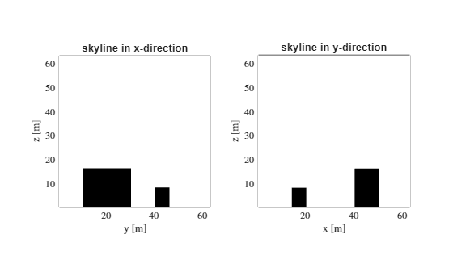
plot_building_ids: display the building ids in the domain¶
help sim.plot_building_ids
--- help for udbase/plot_building_ids ---
A method for plotting building IDs from above (x,y view) with distinct colors
plot_building_ids(OBJ) creates a top-view plot showing buildings
in different colors with building IDs at center of gravity
SEE ALSO: udgeom.splitBuildings, plot_outline, plot_2dmap
This method displays the ids of the individual buildings inside the domain, buildings are numbered from left-bottom to right-top.
figure
sim.plot_building_ids()
Extracting individual buildings from STL geometry...
Ground preprocessing: removing ground faces using deleteGround
Ground preprocessing: 694 faces after deleteGround (removed 1964 ground faces)
Ground preprocessing: direct mapping provided by deleteGround
Building separation completed:
Buildings identified: 2 separate components
Total building faces: 694
Largest building: 580 faces
Smallest building: 114 faces
Average faces per building: 347.0
Creating face-to-building mapping: 694 faces, 2 components
Mapping 694 processed building assignments back to 2658 original faces
Successfully mapped 694 faces to buildings
xlim([0 sim.xlen])
ylim([0 sim.ylen])
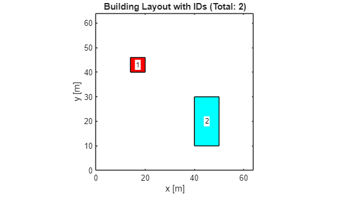
plot_2dmap: display 2dmap¶
help sim.plot_2dmap
--- help for udbase/plot_2dmap ---
Plot a 2D map of buildings colored by a value per building.
plot_2dmap(OBJ, val)
val: numeric scalar or vector with length equal to number of buildings.
plot_2dmap(OBJ, val, labels)
labels: optional cell or string array with labels to display at
the centroid of each building. If provided it must
match the number of buildings.
This plot creates maps showing the 2d building outline, together with some text
% get individual building information from the udgeom instance, the
% buildings ids are ordered according to their centroid.
buildings = sim.geom.get_buildings();
% calculate the maximum height for each building
ids = cell(length(buildings), 1);
hmax = zeros(size(buildings));
for i = 1:length(buildings)
bld = buildings{i};
hmax(i) = max(bld.Points(:,3));
ids{i} = num2str(i);
end
% plot the result
figure
sim.plot_2dmap(hmax, ids)
colorbar
xlim([0 sim.xlen])
ylim([0 sim.ylen])
title('maximum building height')
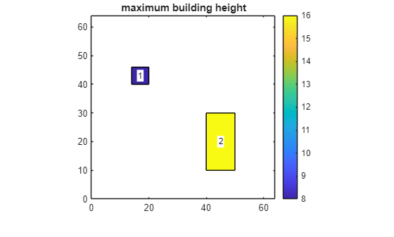
The function format_surface_plot applies a consistent layout to the surface plots. Its implementation
plot_fac_type: display surface types¶
help sim.plot_fac_type
--- help for udbase/plot_fac_type ---
A method for plotting the different surface types used in a
geometry.
plot_fac_type(OBJ) plots the surface types for all buildings
plot_fac_type(OBJ, building_ids) plots the surface types only for
the specified building IDs (array of positive integers)
Examples:
% Plot surface types for all buildings
obj.plot_fac_type();
% Plot surface types only for specific buildings
obj.plot_fac_type([1, 5, 10]);
When working with a surface energy balance model, each facet will have a specific wall type with its own properties (albedo, emissivity, thickness etc). The wall types of the geometry can be conveniently displayed using the method plot_fac_type:
figure
sim.plot_fac_type()
format_surface_plot('', 'SkipColorbar', true)
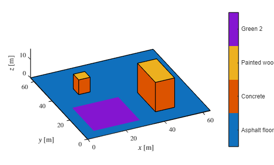
The function format_surface_plot applies a consistent layout to the surface plots. Its implementation is given at the end of the tutorial.
assign_prop_to_fac: assigning wall properties to facets¶
help sim.assign_prop_to_fac
--- help for udbase/assign_prop_to_fac ---
Method for assigning properties of a material (stored in
factypes) to each facet for visualisation or calculation..
assign_prop_to_fac(OBJ, strprop) assigns the property strprop
to the appropriate facet.
Example (assign albedo to each facet):
obj = udbase(expnr);
al = obj.assign_prop_to_fac('al');
The wall type of each facet assigns properties to it which are stored in the factypes structure.
sim.factypes
ans = struct with fields:
id: [9x1 double]
name: [9x1 string]
lGR: [9x1 double]
z0: [9x1 double]
z0h: [9x1 double]
al: [9x1 double]
em: [9x1 double]
d: [9x5 double]
C: [9x5 double]
lam: [9x6 double]
Description:
id: type identifiername: type namelGR: boolean that indicates whether or not there is evaporation on the facetz0: [m] momentum roughness length for wall-functionz0h: [m] heat roughness length for wall-functional: [-] surface albedoem: [-] surface emissivityd: [m] thickness of each layer inside the facetC: [J/m3K] volumetric heat capacity of each layer inside the facet.lam: [W/mK] thermal conductivity on each cell face inside the facet.
In order to assign these properties to each facet, use the method assign_prop_to_fac. For example, to assign the albedo to each surface facet:
albs = sim.assign_prop_to_fac('al');
plot_fac: plot facet quantities¶
help sim.plot_fac
--- help for udbase/plot_fac ---
A method for plotting a facet variable var as a 3D surface
plot_fac(OBJ, var) plots variable var for all facets
plot_fac(OBJ, var, building_ids) plots variable var only for
the specified building IDs (array of positive integers)
Examples:
% Plot net shortwave radiation for all buildings
obj.plot_fac(K);
% Plot only for specific buildings
obj.plot_fac(K, [1, 5, 10]);
We can now plot the albedo using the method plot_fac.
figure
sim.plot_fac(albs)
format_surface_plot('$\alpha$ [-]')
clim([0, 0.5])
xlim([0 sim.xlen])
ylim([0 sim.ylen])
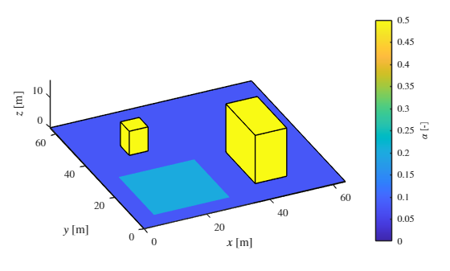
Note that we can also choose to plot only the information for building 1.
figure
sim.plot_fac(albs, 1)
format_surface_plot('$\alpha$ [-]')
clim([0, 0.5])
xlim([0 sim.xlen])
ylim([0 sim.ylen])
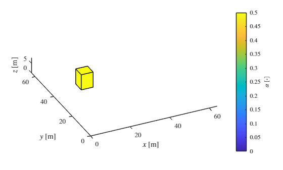
... or for both buildings:
figure
sim.plot_fac(albs, [1 2])
format_surface_plot('$\alpha$ [-]')
clim([0, 0.5])
xlim([0 sim.xlen])
ylim([0 sim.ylen])
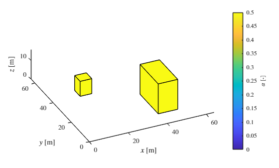
load_fac_momentum: load facet pressure and shear stresses¶
help sim.load_fac_momentum
--- help for udbase/load_fac_momentum ---
A method to retrieve facet data for pressure and shear
information from the fac file.
load_fac_momentum(OBJ) displays the variables in the file
load_fac_momentum(OBJ, svar) retrieves a variable from the file
Example (view contents of output):
obj = udbase(expnr);
obj.load_fac_momentum();
Surface information about shear and pressure can be obtained using the method load_fac_momentum. Calling it without parameters shows the data inside the file:
sim.load_fac_momentum;
Contents of fac.065.nc:
Name Description Units Size Dimensions
_____ _______________________________ _____ _________ __________
cth heat transfer coefficient (Ivo) 2658x1000 fct, time
fct Facet number 2658 fct
htc heat transfer coefficient 2658x1000 fct, time
pres pressure Pa 2658x1000 fct, time
t Time s 1000 time
tau_x tau_x Pa 2658x1000 fct, time
tau_y tau_y Pa 2658x1000 fct, time
tau_z tau_z Pa 2658x1000 fct, time
Now we load the pressure data using the load_fac_momentum method and visualise it using the plot_fac method.
pres = sim.load_fac_momentum('pres');
figure
sim.plot_fac(pres(:,end))
format_surface_plot('$p$ [m$^{2}$s$^{-2}$]')
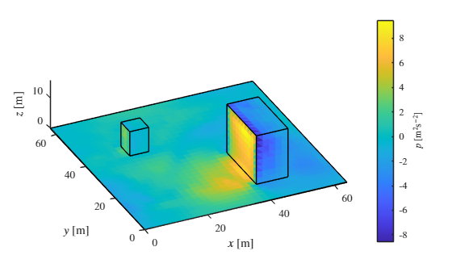
load_fac_eb: load term from the surface energy balance¶
help sim.load_fac_eb
--- help for udbase/load_fac_eb ---
A method to retrieve facet data of a surface energy balance
term from the facEB file.
load_fac_eb(OBJ) displays the variables in the file
load_fac_eb(OBJ, svar) retrieves a variable from the file
Example (view contents of output):
obj = udbase(expnr);
obj.load_fac_eb();
load_fac_eb is a low-level routine that reads individual variables from the surface energy balance file facEB.expnr.nc. It is recommended to use the method load_seb which loads all surface energy balance terms at the same time.
The variables in facEB.expnr.nc are:
sim.load_fac_eb();
Contents of facEB.065.nc:
Name Description Units Size Dimensions
_____ _________________ _____ __________ __________
LWin Incoming longwave W/m^2 2658x10020 fct, time
LWout Outgoing longwave W/m^2 2658x10020 fct, time
WGR Water content ? 2658x10020 fct, time
ef Latent heat W/m^2 2658x10020 fct, time
fct Facet number 2658 fct
hf Sensible heat W/m^2 2658x10020 fct, time
netsw Net shortwave W/m^2 2658x10020 fct, time
t Time s 10020 time
Let's load and plot the net shortwave radiation at the end time
Kstar = sim.load_fac_eb('netsw');
figure
sim.plot_fac(Kstar(:,end))
format_surface_plot('$K^*$ [Wm$^{-2}$]')
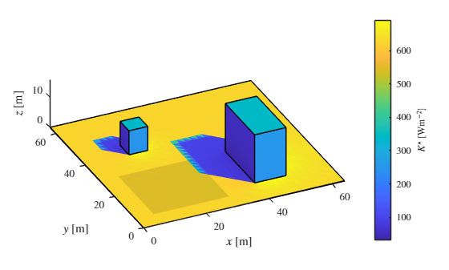
load_seb: load all surface energy balance terms¶
help sim.load_seb
--- help for udbase/load_seb ---
A method to retrieve all surface energy balance terms on each
of the facets as a function of time.
load_seb(OBJ) loads the terms in the surface energy balance.
Example:
obj = udbase(expnr);
obj.load_seb();
the method load_seb loads all energy balance terms including surface temperature at once and is the preferred way of working with terms in the surface energy balance.
seb = sim.load_seb()
seb = struct with fields:
Kstar: [2658x10020 single]
Lstar: [2658x10020 single]
Lin: [2658x10020 single]
Lout: [2658x10020 single]
H: [2658x10020 single]
E: [2658x10020 single]
G: [2658x10020 single]
Tsurf: [2658x10020 single]
t: [10020x1 single]
Let's plot all components of the surface energy balance at the last timestep
figure
subplot(3,2,1)
sim.plot_fac(seb.Kstar(:,end))
format_surface_plot('$K^*$ [Wm$^{-2}$]')
subplot(3,2,2)
sim.plot_fac(seb.Lstar(:,end))
format_surface_plot('$L^*$ [Wm$^{-2}$]')
subplot(3,2,3)
sim.plot_fac(seb.H(:,end))
format_surface_plot('$H$ [Wm$^{-2}$]')
subplot(3,2,4)
sim.plot_fac(seb.E(:,end))
format_surface_plot('$E$ [Wm$^{-2}$]')
subplot(3,2,5)
sim.plot_fac(seb.G(:,end))
format_surface_plot('$G$ [Wm$^{-2}$]')
subplot(3,2,6)
sim.plot_fac(seb.Tsurf(:,end))
format_surface_plot('$T_{surf}$ [K]')
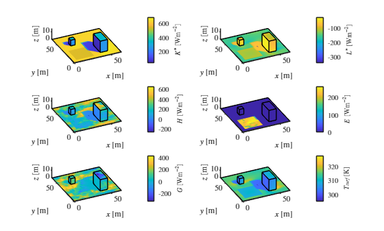
load_fac_temperature: load temperatures inside facets¶
help sim.load_fac_temperature
--- help for udbase/load_fac_temperature ---
A method to retrieve temperature and temperature gradient
data from the facT file.
load_fac_temperature(OBJ) displays the variables in the file
load_fac_temperature(OBJ, svar) retrieves a variable from the file
Example (view contents of output):
obj = udbase(expnr);
obj.load_fac_temperature();
The following information is available about the temperature inside facets:
sim.load_fac_temperature();
Contents of facT.065.nc:
Name Description Units Size Dimensions
____ _____________________ _____ ____________ ______________
T Temperature K 2658x6x10020 fct, lyr, time
dTdz Temperature gradient K/m 2658x6x10020 fct, lyr, time
fct Facet number 2658 fct
lyr Number of wall layers 6 lyr
t Time s 10020 time
This data can be used to explore what goes on inside each facet. As an example, let's plot the time-evolution of temperature inside facet 1:
% load time, temperature data and layer thicknesses
t = sim.load_fac_temperature('t');
T = sim.load_fac_temperature('T');
d = sim.assign_prop_to_fac('d'); % retrieve facet layer thicknesses
facid = 1;
tsel = t(1:1000:end);
Tsel = squeeze(T(facid, :, 1:1000:end));
x = [0, cumsum(d(facid, :))]; % temperature is defined on cell faces
figure
hold on
leg = cell(size(tsel));
for n = 1:length(tsel)
plot(x, Tsel(:, n), 'LineWidth', 1)
leg{n} = ['$t=', num2str(tsel(n), '%8.0f'), '$ s'];
end
l = legend(leg);
box on
l.Interpreter = 'latex';
xlabel('$x$ [m]','Interpreter','latex')
ylabel('$T$ [K]','Interpreter','latex')
ax = gca;
ax.TickLabelInterpreter = 'latex';
title('Temperature inside facet 1')
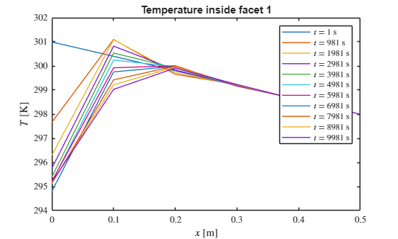
area_average_seb: perform area-averaging of the surface energy balance terms¶
help sim.area_average_seb
--- help for udbase/area_average_seb ---
A method for calculating the area-averaged surface energy
balance.
area_average_seb(OBJ, seb) averages the variables in seb over the
area.
Example:
obj = udbase(expnr);
seb = obj.load_seb()
seb_av = obj.area_average_seb(seb);
This method converts the facet-by-facet surface energy balance to an area-averaged surface energy balance.
seb_av = sim.area_average_seb(seb)
seb_av = struct with fields:
Kstar: [461.2403 461.2403 461.2403 461.2403 461.2403 461.2403 461.2403 461.2403 461.2403 461.2403 461.2147 461.2147 461.2147 461.2147 461.2147 461.2147 461.2147 461.2147 461.2147 461.2147 461.2147 461.2147 461.2147 461.2147 … ] (1x10020 single)
Lstar: [-61.3138 -61.3469 -61.3852 -61.4188 -61.4530 -61.4909 -61.5253 -61.5605 -61.5961 -61.6331 -61.3138 -61.3469 -61.3852 -61.4188 -61.4530 -61.4909 -61.5252 -61.5604 -61.5961 -61.6331 -61.3138 -61.3469 -61.3852 -61.4188 … ] (1x10020 single)
Lin: [373.6797 373.6832 373.6863 373.6898 373.6931 373.6962 373.6998 373.7029 373.7063 373.7097 373.6797 373.6832 373.6863 373.6898 373.6931 373.6962 373.6998 373.7029 373.7063 373.7096 373.6797 373.6832 373.6863 373.6898 … ] (1x10020 single)
Lout: [434.9932 435.0301 435.0715 435.1083 435.1460 435.1872 435.2253 435.2637 435.3025 435.3427 434.9932 435.0299 435.0714 435.1081 435.1460 435.1872 435.2255 435.2637 435.3022 435.3427 434.9932 435.0299 435.0714 435.1081 … ] (1x10020 single)
H: [0.7807 3.6902 7.5545 10.5529 11.8296 11.1453 10.0029 9.9542 10.1124 10.3147 0.7807 3.6902 7.5545 10.5530 11.8298 11.1455 10.0029 9.9541 10.1123 10.3149 0.7807 3.6902 7.5545 10.5530 11.8298 11.1455 10.0029 9.9541 10.1123 … ] (1x10020 single)
E: [25.9738 16.7287 16.5153 16.3215 16.1434 15.9498 15.7488 15.5422 15.2622 15.0522 25.9738 16.7313 16.5179 16.3240 16.1458 15.9522 15.7511 15.5444 15.2642 15.0543 25.9738 16.7313 16.5179 16.3240 16.1458 15.9522 15.7511 … ] (1x10020 single)
G: [373.2034 379.5020 375.8164 372.9749 371.8422 372.6852 373.9917 374.2121 374.2988 374.2705 373.1778 379.4739 375.7881 372.9467 371.8143 372.6568 373.9637 374.1846 374.2715 374.2426 373.1778 379.4739 375.7881 372.9467 … ] (1x10020 single)
t: [10020x1 single]
Check that the surface energy balance terms sum to zero:
max(abs(seb_av.Kstar+seb_av.Lstar-seb_av.H-seb_av.E-seb_av.G))
ans = single0.0313
This value is very small compared to the mean incoming short-wave radiation on the facets (~400 W/m2) and we therefore conclude that the surface energy balance closes. We now create a plot of the area-averaged surface energy balance.
figure()
hold on
plot(seb_av.t,seb_av.Kstar, seb_av.t,seb_av.Lstar, seb_av.t,seb_av.H, ...
seb_av.t,seb_av.E, seb_av.t,seb_av.G, 'LineWidth',1);
xlim([0,seb_av.t(end)])
l = legend('$K^*$','$L^*$','$H$','$E$','$G$');
box on
l.Interpreter = 'latex';
xlabel('$t$ [s]','Interpreter','latex')
ylabel('$\langle F \rangle_s$ [Wm$^{-2}$]','Interpreter','latex')
ax = gca;
ax.TickLabelInterpreter = 'latex';
title('Area-averaged surface energy balance')
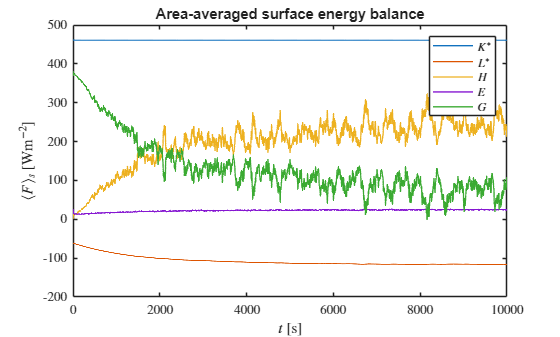
Note that this is an average over the surface. In order to obtain the surface energy balances typically used in meteorology, we will need to project this onto a flat ground using a factor f=A_{3D} /A_{2D}, where A_{3D} is the total surface area and A_{2D} is the projected surface area (height x width of the domain).
% Define a factor f = A3D/A2D.
f = sum(sim.facs.area)/(sim.xlen*sim.ylen);
% Upon multiplying the area-averaged SEB with f, the SEB represents a
% projected-area-averaged SEB term as typically presented in meteorological
% applications.
figure()
hold on
plot(seb_av.t,f*seb_av.Kstar, seb_av.t,f*seb_av.Lstar, seb_av.t,f*seb_av.H, ...
seb_av.t,f*seb_av.E, seb_av.t,f*seb_av.G, 'LineWidth',1);
xlim([0,seb_av.t(end)])
l = legend('$K^*$','$L^*$','$H$','$E$','$G$');
box on
l.Interpreter = 'latex';
xlabel('$t$ [s]','Interpreter','latex')
ylabel('$F$ [Wm$^{-2}$]','Interpreter','latex')
ax = gca;
ax.TickLabelInterpreter = 'latex';
title('Standard surface energy balance')
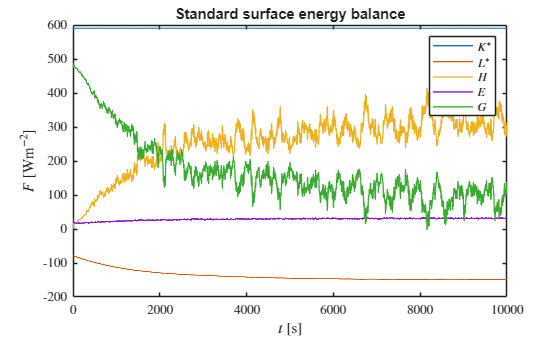
area_average_fac: area-averaging over facet data¶
help sim.area_average_fac;
--- help for udbase/area_average_fac ---
A method for area-averaging a facet quantity, either over all
facets or over a selection.
area_average_fac(OBJ, var) area-averages variable var over
all facets.
area_average_fac(OBJ, var, sel) area-averages variable var
over the facet indices in sel
Example:
K_av = obj.area_average_fac(K);
This method performs area-averaging, either over all facets or over a selection of facets.
Below we provide a non-trivial example on how to this method can be used to obtain a surface energy balance for the sidewalls in the domain. The sidewalls will be selected by using that the z-component of the surface normal has to be zero:
% Select side walls
norms = sim.geom.stl.faceNormal;
fac_ids = find(abs(norms(:, 3)) < 1e-6);
% a quick visual check
I = zeros(size(sim.facs.area));
I(fac_ids) = 1;
figure
sim.plot_fac(I)
format_surface_plot('')
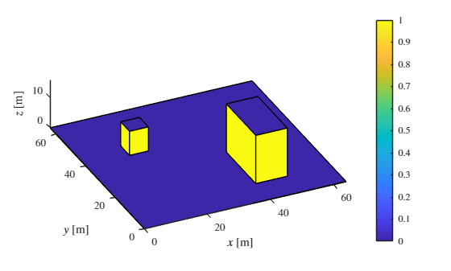
This looks correct. We can now calculate and plot the area-averaged surface energy balance on the side-walls.
Kav_side = sim.area_average_fac(seb.Kstar, fac_ids);
Lav_side = sim.area_average_fac(seb.Lstar, fac_ids);
Hav_side = sim.area_average_fac(seb.H, fac_ids);
Eav_side = sim.area_average_fac(seb.E, fac_ids);
Gav_side = sim.area_average_fac(seb.G, fac_ids);
figure()
hold on
plot(seb.t,Kav_side, seb.t,Lav_side, seb.t,Hav_side, ...
seb.t,Eav_side, seb.t,Gav_side, 'LineWidth',1);
xlim([0,seb_av.t(end)])
l = legend('$K^*$','$L^*$','$H$','$E$','$G$');
box on
l.Interpreter = 'latex';
xlabel('$t$ [s]','Interpreter','latex')
ylabel('$\langle F \rangle_s$ [Wm$^{-2}$]','Interpreter','latex')
ax = gca;
ax.TickLabelInterpreter = 'latex';
title('Area-averaged surface energy balance for sidewalls')
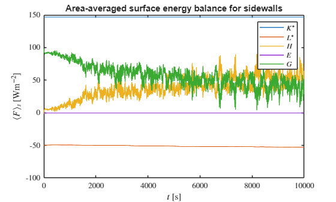
% average over entire time-range, merge short-term time average to
% long-term
% see utility_tutorial for functions merge_stat_var and so on
[Havt, ~] = merge_stat(seb.H, zeros(size(seb.H)), length(seb.t));
figure
subplot(1,2,1)
sim.plot_fac(Havt)
format_surface_plot('$H$ [Wm$^{-2}$]')
colorbar off
subplot(1,2,2)
sim.plot_fac(Havt)
format_surface_plot('$H$ [Wm$^{-2}$]')
colorbar off
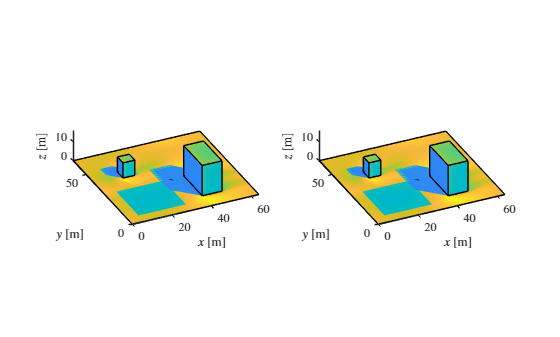
convert_facvar_to_field: convert facet data to grid¶
help sim.convert_facvar_to_field
--- help for udbase/convert_facvar_to_field ---
Method for transferring a facet variable onto the grid.
Inputs:
var: facet variable (e.g. from load_fac_eb, load_fac_temperature, etc)
facsec: facet section structure (e.g. obj.facsec.u)
building_ids (optional): array of building IDs to include. If not
specified, all buildings are included.
Outputs:
fld: variable on the grid (itot x jtot x ktot)
The facsec and dz inputs are required since the routine does not know where % on the staggered grid the variable is located.
convert_facvar_to_field(OBJ, var, facsec) transfers a variable onto the grid.
convert_facvar_to_field(OBJ, var, facsec, building_ids) converts only
facets from the specified building IDs.
Examples:
% Convert all facets
fld = obj.convert_facvar_to_field(var, sim.facsec.c);
% Convert only specific buildings
fld = obj.convert_facvar_to_field(var, sim.facsec.c, [1, 5, 10]);
This function assigns facet data to the grid, which is useful for some averaging and visualisation methods. For example, we can show the time-averaged surface temperature for buildings 1 and 2 and visualise the associated 3D grid locations:
Tsav = merge_stat(squeeze(T(:,1,:)), zeros(size(squeeze(T(:,1,:)))), length(seb.t));
Tsgrid = sim.convert_facvar_to_field(Tsav,sim.facsec.c, [1 2]);
% Get the (x, y, z) coordinates of non-zero elements
[i, j, k] = ind2sub(size(Tsgrid), find(abs(Tsgrid) > 0));
x = sim.xt(i); y = sim.yt(j); z = sim.zt(k);
% Get the corresponding values
values = Tsgrid(abs(Tsgrid) > 0);
% Plot the data using scatter3
figure;
scatter3(x, y, z, 24, values, 'filled');
format_surface_plot('$T_s$ [K]');
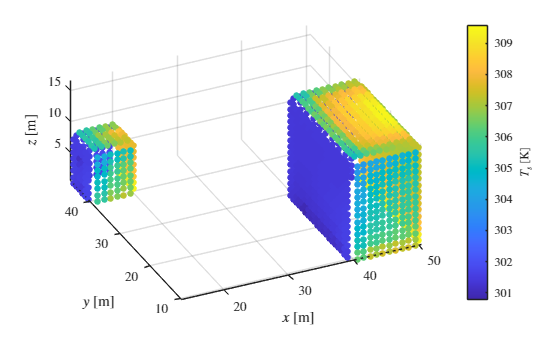
convert_facflx_to_field: convert facet data to 3D density field¶
help sim.convert_facflx_to_field
--- help for udbase/convert_facflx_to_field ---
Method for converting a facet variable to a density in a 3D
field.
Inputs:
var: facet flux variable (e.g. from load_fac_eb, load_fac_temperature, etc)
facsec: facet section structure (e.g. obj.facsec.u)
dz: vertical grid spacing at cell centers (obj.dzt)
building_ids (optional): array of building IDs to include. If not
specified, all buildings are included.
Outputs:
fld: 3D field density (itot x jtot x ktot)
The facsec and dz inputs are required since the routine does not know where % on the staggered grid the variable is located.
convert_facflx_to_field(OBJ, var, facsec, dz) converts the facet variable var
to a 3D field density for all facets.
convert_facflx_to_field(OBJ, var, facsec, dz, building_ids) converts only
facets from the specified building IDs.
Examples:
% Convert all facets
fld = obj.convert_facflx_to_field(var, sim.facsec.c, sim.dzt);
% Convert only specific buildings
fld = obj.convert_facflx_to_field(var, sim.facsec.c, sim.dzt, [1, 5, 10]);
This function assigns facet data to a density in a 3D field, which is useful for assessing plane-average distributed stresses [1] as well as the multi-scale analysis proposed by Van Reeuwijk and Huang [2]. For example, we can convert the time-averaged heat flux Havt to a 3d density field as follows.
rhoH = sim.convert_facflx_to_field(Havt,sim.facsec.c,sim.dzt);
% let's check whether the integrals of the 2D and 3D fields match:
s = 0;
for k = 1:size(rhoH, 3)
s = s + sum(sum(rhoH(:,:,k)*sim.dx*sim.dy*sim.dzt(k)));
end
% calculate the relative error
abs(s - sum(Havt .* sim.facs.area)) / s
ans = single9.4734e-08
The relative error is extremely small which shows that the total amount of heat added to the domain is equivalent in both cases. Let's visualise the density field:
% Get the (x, y, z) coordinates of non-zero elements
[i, j, k] = ind2sub(size(rhoH), find(abs(rhoH) > 0));
x = sim.xt(i); y = sim.yt(j); z = sim.zt(k);
% Get the corresponding values
values = rhoH(abs(rhoH) > 0);
% Plot the data using scatter3
figure;
scatter3(x, y, z, 24, values, 'filled');
format_surface_plot('$\rho_{H}$ [Wm$^{-3}$]');
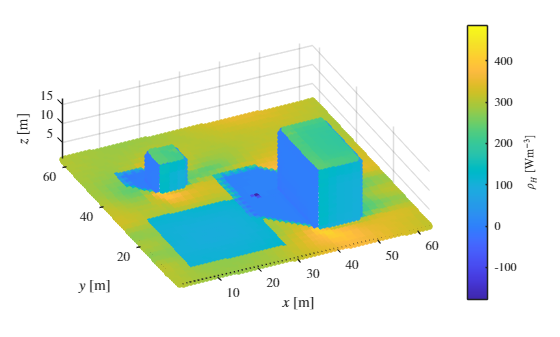
Here, we note that it is a coincidence that the values of the sensible heat flux density \rho_{H\;} are similar to those of the heat flux \bar{H\;} itself, despite their units being different.
We can also select specific buildings:
rhoH = sim.convert_facflx_to_field(Havt,sim.facsec.c,sim.dzt, [1, 2]);
% Get the (x, y, z) coordinates of non-zero elements
[i, j, k] = ind2sub(size(rhoH), find(abs(rhoH) > 0));
x = sim.xt(i); y = sim.yt(j); z = sim.zt(k);
% Get the corresponding values
values = rhoH(abs(rhoH) > 0);
% Plot the data using scatter3
figure;
scatter3(x, y, z, 24, values, 'filled');
format_surface_plot('$\rho_{H}$ [Wm$^{-3}$]');
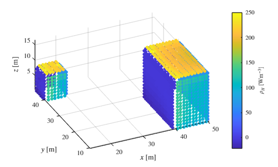
To calculate the horizontally-average heat flux density, we can simply average over the horizontal directions.
rhoH = sim.convert_facflx_to_field(Havt,sim.facsec.c,sim.dzt);
fH = squeeze(mean(mean(rhoH, 1), 2));
figure
plot(fH, sim.zt, 'LineWidth',1);
box on
ylabel('$z$ [m]','Interpreter','latex')
xlabel('$f_H$ [Wm$^{-3}$]','Interpreter','latex')
ax = gca;
ax.TickLabelInterpreter = 'latex';
title('Distributed heat flux')
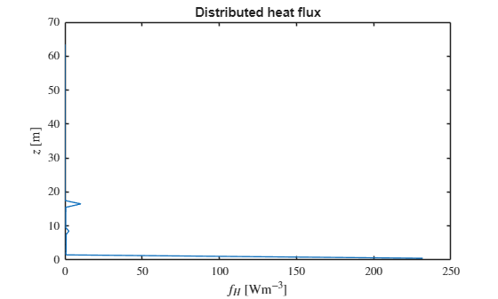
Function to format surface plots¶
This auxiliary function is used to ensure a consistent layout of all surface plots in this tutorial.
function format_surface_plot(strvar, varargin)
% Parse optional parameters
p = inputParser;
addParameter(p, 'SkipColorbar', false, @islogical);
parse(p, varargin{:});
% Apply standard formatting
view(-25,30)
xlabel('$x$ [m]','Interpreter','latex')
ylabel('$y$ [m]', 'Interpreter','latex')
zlabel('$z$ [m]','Interpreter','latex')
ax = gca;
ax.TickLabelInterpreter = 'latex';
axis equal
% Only create/modify colorbar if not skipped
if ~p.Results.SkipColorbar
c = colorbar;
c.Label.String = strvar;
c.Label.Interpreter = 'latex';
c.TickLabelInterpreter = 'latex';
end
end
References¶
[1] Suetzl BS, Rooney GG, van Reeuwijk M (2020). Drag Distribution in Idealized Heterogeneous Urban Environments. Bound-Lay. Met. 178, 225-248.
[2] Maarten van Reeuwijk, Jingzi Huang (2025) Multi-scale Analysis of Flow over Heterogeneous Urban Environments, Bound-Lay. Met. 191, 47.